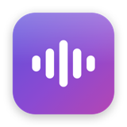

Dictation that speaks your language.
Hold a key, speak, let go — the text appears where your cursor is. Dictation on a Mac is excellent in English and patchy to absent in everything else. This is built the other way round: the languages everyone treats as minor are the ones it is for, it costs pennies, and it just works.
36 languages
Including the ones the big tools treat as minor. All of them equal — there is no first-class language here.
One menu, one gesture
Hold right ⌘, speak, let go. Everything else lives in a single menu, and this is all of it:
- Trigger key
- Right Command, or Shift together with it.
- Language
- Follows the system until you pick one.
- Max recording length
- Stops a recording you forgot about, so it cannot run up a bill.
- History
- Off by default. On, it keeps the last few transcripts so you can put one back on the clipboard.
- Play sounds
- A note when recording starts and when the text lands.
- Paste automatically
- On. Off, the text waits on the clipboard for you.
- Remove filler words
- Off by default, because it rewrites what you said.
- Edit vocabulary
- Your own names and jargon, one per line.
- Open log
- What the app did and why, in plain sentences.
- Launch at login
- Off by default.
- Check for updates
- Manual only. Nothing is downloaded unless you ask.
Setting it up
Ten minutes. You bring your own ElevenLabs key: you pay them directly for what you dictate and nothing goes through anyone else. Their free tier is 10,000 credits a month and transcription costs 330 credits a minute, so roughly half an hour of dictation every month costs nothing at all — check their current pricing before you rely on that.
Drag NativeVoice into Applications and open it. It has no window; look for it in the menu bar.
Make a key at ElevenLabs → Settings → API Keys and copy it at once — they show it only the first time.
Menu → Settings… → paste → Save. It goes into the macOS keychain and the app never shows it again.
Allow Input Monitoring in System Settings, then quit and reopen the app. macOS gives the permission only to a fresh process, so nothing changes until you do.
Allow Accessibility too. This one fails quietly: without it your words are transcribed and the paste is thrown away, so you hear the finishing sound and nothing arrives.
Two things that fix most mistakes
Turn the microphone up
A quiet signal changes digits before it garbles words, which is the dangerous way round. Measured here: at a −41 dB peak “one hundred and forty-two” came back as “one hundred and sixty-two”; at −26 dB it was right. Speech should peak near −12 dB, and the app tells you when yours does not.
Add your own words
Names and jargon are what transcription gets wrong, and they are a short list only you know. One term per line, read before every transcription, so edits apply immediately.
~/.config/nativevoice/vocabulary.txtBuild it yourself
No dependencies, nothing hidden, about 3,500 lines.
git clone https://github.com/trustbe/nativevoice.git
cd nativevoice
./Scripts/build-app.sh 0.1.0 1